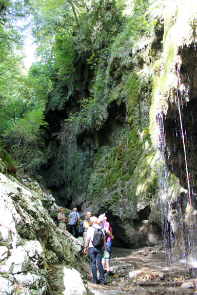
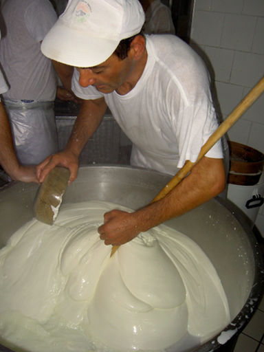
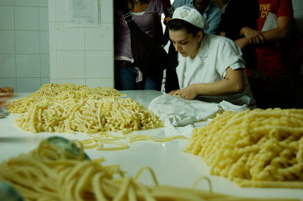
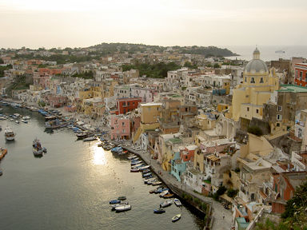
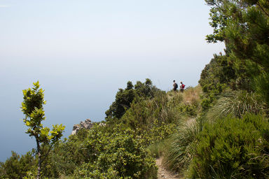
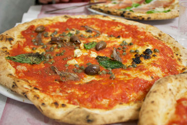
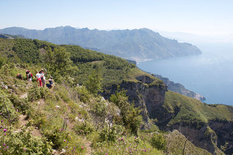

Was die cucina italiana in der Welt berühmt gemacht, pizza e pasta, kommt von hier! Dazu die saftige Büffelmilch-Mozzarella und leuchtende Zitronen, in die man direkt reinbeißen möchte. In unserer neuen familiären Unterkunft mit nur sechs Zimmern und Meerblick, gelegen inmitten von Zitronenhainen, verwöhnt uns Gastgeberin Maria mit ihrer authentischen bäuerlichen Küche.
Wir wohnen im Agriturismo Villa Maria in Minori, etwa vier Kilometer von Amalfi über der Küste. Es liegt mit Meerblick inmitten eines Zitronenhains und besitzt nur sechs Zimmer, die für unsere Gruppe reserviert sind. Unsere Gastgeber Maria und Vincenzo sind ein rührendes Paar, er bestellt die Gärten, sie ist eine fantastische Köchin! Beim gemeinsamen Abendessen bei Maria und Vincenzo lernen Sie Ihre Mitreisenden kennen.

2. Tag: Wandern & Amalfi
Nach dem tollen italienischen Frühstück bei Maria unternehmen wir eine Wanderung durch das Valle delle Ferriere. Nur wenige Kilometer hinter der Küste gelegen, ist das Tal eine eigene Welt mit dichter Vegetation, Wasserfällen und verfallenen Mühlen am Flusslauf. Umso beeindruckender, wenn sich das Tal dann oberhalb von Amalfi zum Meer und der Sonne öffnet. Beim Mittagsimbiss probieren wir die tollen formaggi e salumi der Region und wir besichtigen die berühmte Kathedrale Amalfis im arabisch-sizilianischen Stil mit Baubeginn im Jahr 973. Es bleibt Zeit für eigene Erkundungen oder einen Sprung ins Meer. Am Abend verwöhnt uns Maria wieder mit ihrer traditionellen kampanischen Küche, einige Kostproben: hausgemachte Pasta mit Auberginen, Tomaten und Provola, Kalamar mit Kartoffeln oder Kaninchen in Zitronenblättern.
Wanderung San Lazzaro-Amalfi: etwa 7 km, 300 m Höhenunterschied bergab, 4 Stunden mit Erklärungen und Pausen, Schwierigkeit: leicht. Alternativen per Bus möglich.

3. Tag: Mozzarella di Bufala & Weinbau
Von der Aufzucht der Büffel bis zum Formen der kleinen Bällchen sehen wir heute die gesamte Produktion des berühmten Käses, den man hier nur einige Stunden nach der Produktion frisch isst und am nächsten Tag allenfalls noch in die Pasta tut. Auf den Biss in diesen unvergleichlich milchigen, saftigen, leicht säuerlichen Käse freuen wir uns vor jeder Reise! Am Nachmittag besuchen wir einen der Weinbau-Heroen, die an der steilen Küste großartige, meist weiße Weine erzeugen. (Die Steillagen brauchen den Vergleich mit denen der Mosel nicht zu scheuen – nur dass hier unter uns das azurblaue Meer schimmert!) Vielleicht gehen wir zu Marisa Cuomo in Furore oder wir besuchen Giuseppe Apicella – beides Legenden.

4. Tag: Pasta in Gragnano
Heute fahren wir nach Gragnano, den Ort, von dem im 16. Jahrhundert die Entwicklung der getrockneten Pasta in Italien ausging. Dort sind wir zu Gast bei Alberto Zampino, dessen Familie hier das 1876 gegründete Pastificio Gentile besitzt. Eine besondere Spezialität sind die bis heute von Hand gerollten langen fusilli. Wir erleben, wie die Frauen sie rollen und dürfen vielleicht auch selber einmal probieren. (Es ist nicht einfach... und auch in Gragnano gibt es nur noch wenige, die sich auf diese Arbeit verstehen.) Zu Mittag essen wir bei Mamma Maria Zampino, die nur für unsere Gruppe kocht. Einige Jahrzehnte Pasta-Erfahrung kommen auf unsere Teller! Am Nachmittag fahren wir zurück nach Furore, wo wir freie Zeit haben und heute Abend in einem sehr guten Restaurant ein Fischmenü genießen!

5. Tag: Zu Ihrer freien Verfügung
Es bieten sich zum Beispiel ein Tag am Meer oder eine weitere Wanderung an, die man direkt von der Unterkunft beginnen kann.
Optional bieten wir einen Ausflug mit einem privaten Boot nach Capri an. Unser Fahrer bringt Sie zum Hafen, von wo Sie zu der berühmten Insel fahren, sie umrunden, ggf. auch einen Badestopp einlegen und dann einige Stunden Zeit haben, Capri zu erkunden. Am Spätnachmittag geht es wieder auf das Boot zurück nach Amalfi, wo unser Fahrer Sie am Hafen erwartet und zurück in die Unterkunft bringt. Der Ausflug kostet 95 € pro Person und kann ab 5 Teilnehmern durchgeführt werden.

6. Tag: Wandern & lokale Spezialitäten
Heute geht auf den berühmtesten Weg der Küste, den Sentiero degli Dei – Weg der Götter. Von Bomerano auf gut 600 Metern wandern wir mit unserem Guide nach Positano. Der Weg trägt den Namen wegen der „göttlichen“ Blicke über die Amalfiküste, die Halbinsel von Sorrent und Capri. Zugleich sieht man hier, wie die Menschen seit Jahrhunderten mit viel Mühe und Geschick Häuser in die Hänge über der Küste gebaut haben. Wir haben das Glück, in einem dieser alten Häuser empfangen und zum Mittagsimbiss mit lokalen Spezialitäten verwöhnt zu werden. Am Nachmittag haben wir Zeit für einem Rundgang in dem ehemaligen Fischerdorf Positano, das inzwischen sehr schick ist. Wer möchte kann den „Götterweg“ nach seinem schönsten Teil in Nocella abkürzen und den Abstieg nach Positano über viele Stufen und etwa 400 Höhenmeter auslassen. Am Abend essen wir wieder bei Maria im Agriturismo und lassen den ereignisreichen Tag ausklingen.
Wanderung Bomerano - Positano: etwa 8 km, 600 m Höhenunterschied bergab, 4 Stunden mit Erklärungen und Pausen, Schwierigkeit: leicht-mittel. Alternativen per Bus möglich.

7. Tag: Neapel
Zum Abschluss der Reise fahren wir nach Neapel. Mit unserem deutschsprachigen Guide schlendern wir durch die engen Gassen, die nach Geschichte und Geschichten riechen, probieren die besten caffè und blicken in die Kirchen. Beim Pizzabäcker Di Matteo lüften wir mittags einige Geheimnisse rund um das Neapolitanische Leibgericht. Am Nachmittag haben wir Zeit für eigene Unternehmungen und Besorgungen. Zu unserem großen gemeinsamen Abschiedsessen genießen wir noch einmal den Blick über die Küste auf der Terrasse „daheim“ bei Maria.

8. Tag: Abschied
Heute heißt es Abschied nehmen von unserer Reise an der Amalfiküste. Wer möchte, schließt noch einige Tage auf Ischia, Procida oder Capri an. Gerne stehen wir Ihnen mit Anregungen zur Verfügung.
Schwierigkeitsgrad
Zwei Wanderungen mit etwa 7-8 km, Höhenunterschiede von etwa 300-600 m bergab und Wanderzeit bis zu etwa 3,5 Stunden pro Tag. Schwierigkeit leicht-mittel. Die Wege sind teils schmal und steinig. Es sind oft Treppen zu steigen. Gute Trittsicherheit sowie eine gewisse Kondition sind notwendig. Individuelle Abkürzungen und Alternativen vor Ort sind möglich.